MAGAZINE
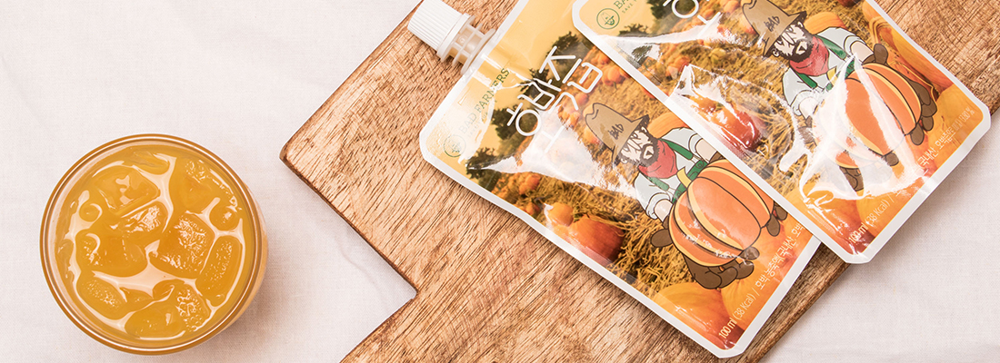
/ SURE 2016 / 딜리버리 다이어트 도시락
샐러드를 선택할 때는 다양한 채소와 단백질로 구성된 제품이 좋다. 라이스의 경우 탄수화물과 채소, 단백질의 구성을 비교해봐야 한다. 또한 샘플을 먹어볼 수 있는 곳인지, 반품은 가능한지에 대한 여부도 확인해야 한다.
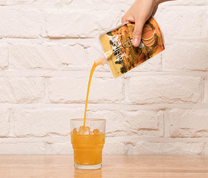
/브릿지경제 2016 / 간편 건강식 제품군 인기... '붓기' 빼는 데 좋은 호박즙 패키지 출시
DATE / 2016-03-04
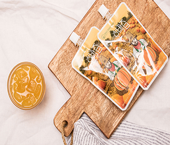
/ 이투데이 2016 / 바쁜 현대인을 위한 간편식 인기. 배드파머스 호박즙 품절 사태
DATE / 2016-03-04
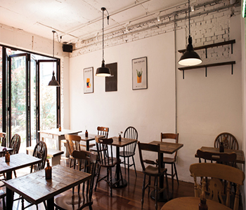
/ FOOD LIFE 2015 / 패션 피플 3인의 My Delicious Recipe
DATE / 2016-01-28
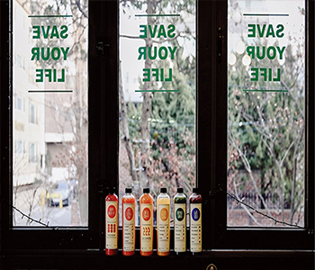
/ styler 주부생활 2015 / 나쁘지 않은 농부들 '배드파머스'
DATE / 2016-01-28
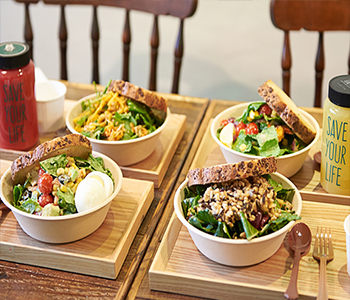
/ BIKE REPAIR SHOP 2015 / 에디터 정환욱님과 이야기
DATE / 2016-01-28
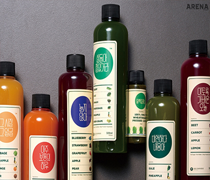
/ 아레나 2015 / 잘 먹고 잘 살기
DATE / 2016-01-28
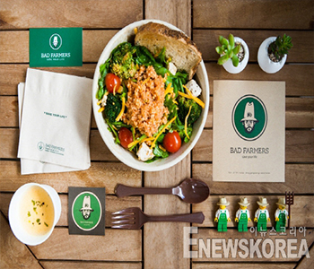
/ 이뉴스코리아 2015 / 느리게, 더 느리게, 아주 느리게
DATE / 2016-01-26
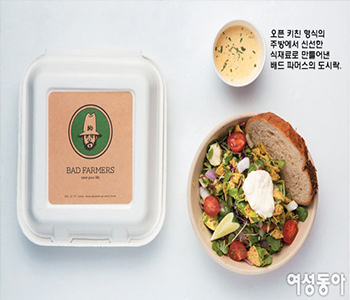
/ 여성동아 2015 / 테이크아웃하기 딱 좋은 봄날엔
DATE /2016-01-26
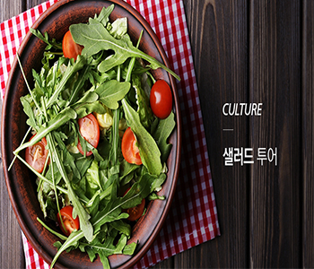
/ it pouch 2015 / CUTURE 샐러드 투어
DATE / 2016-01-25
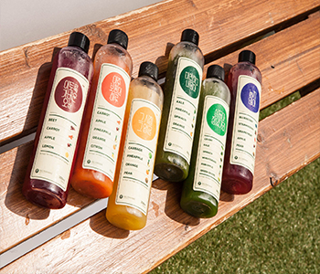
/ The Sharp# Life 2015 / 내 아이와 우리 가족, 이웃을 위한 알짜배기 정보 (더샵 라이프)가 알려드립니다.
DATE / 2016-01-25
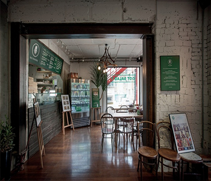
/ NOBLESSE 2015 / SEOUL CAFE&BISTRO RESTAURANT
DATE / 2016-01-25
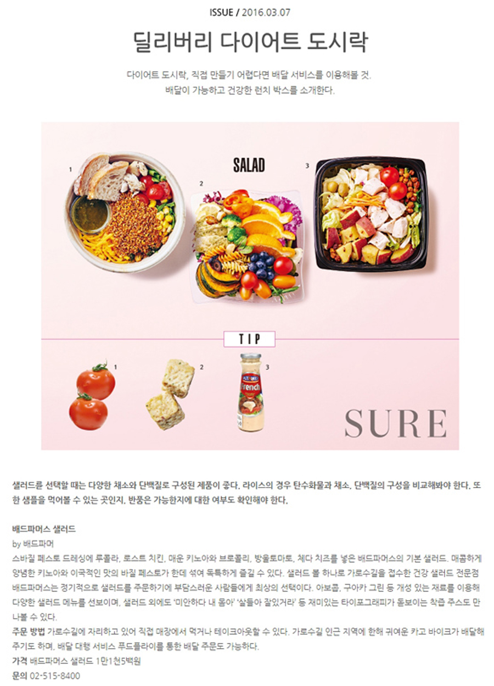
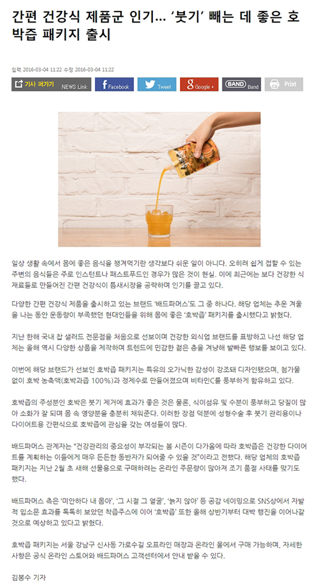
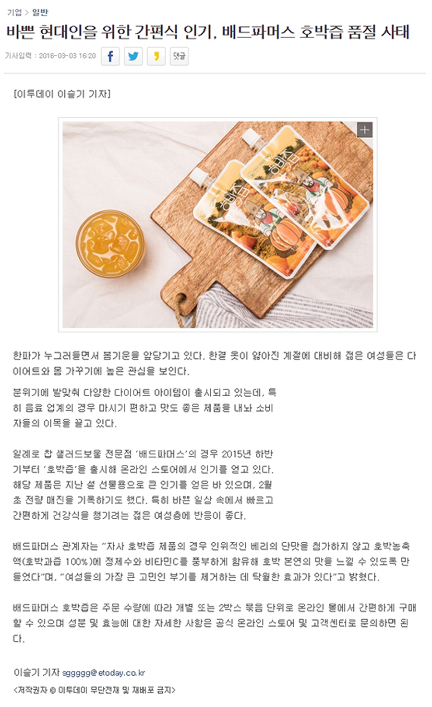
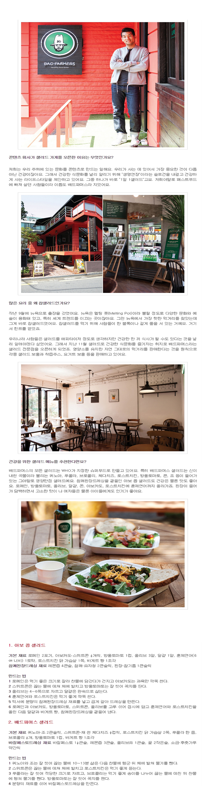
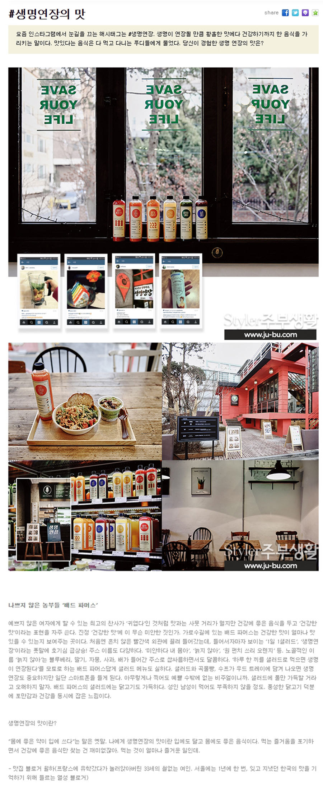
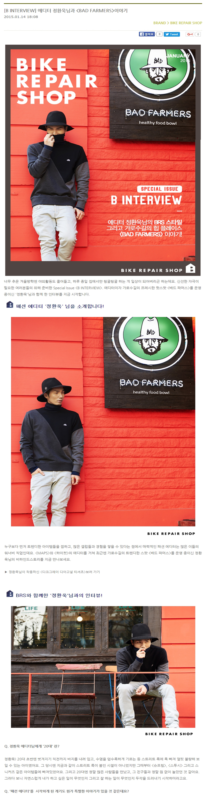
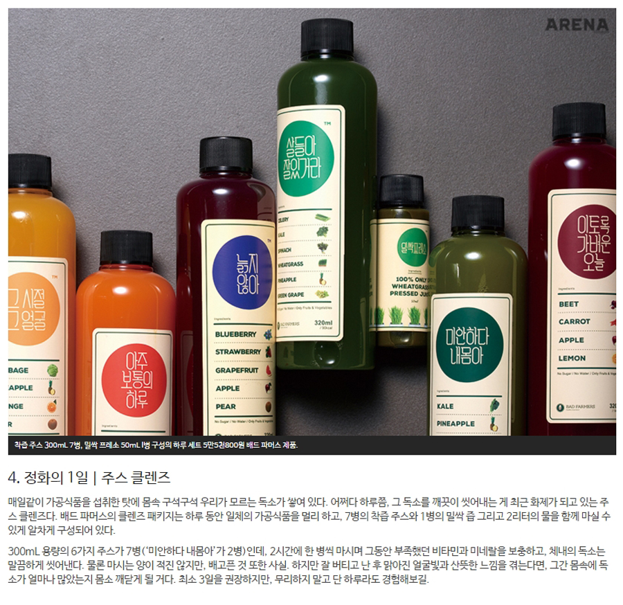
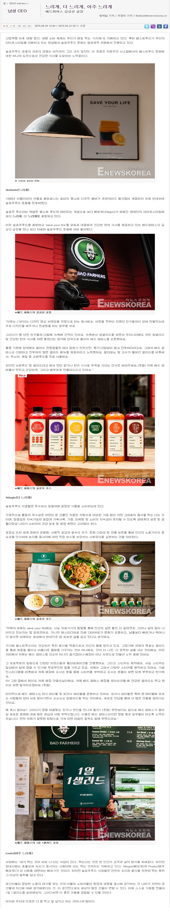
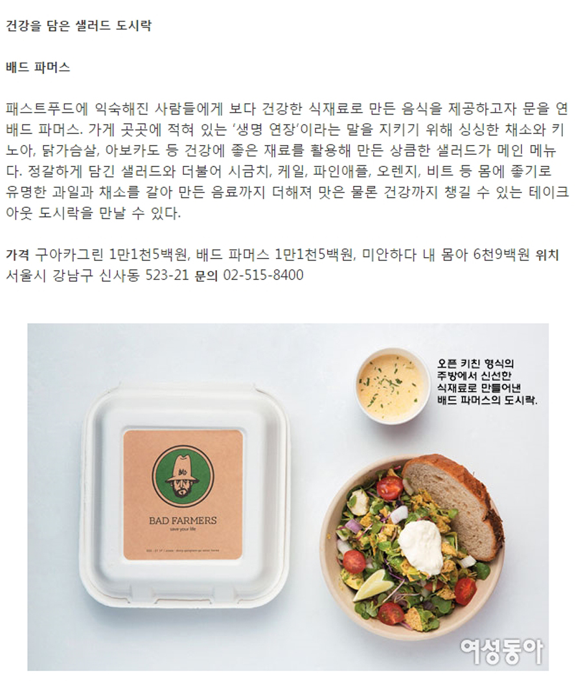
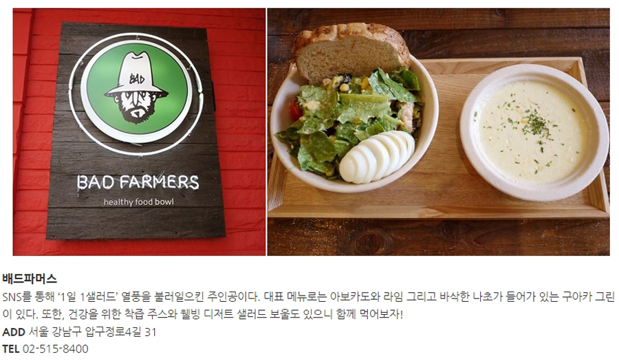
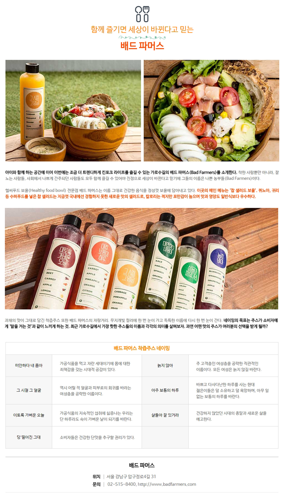
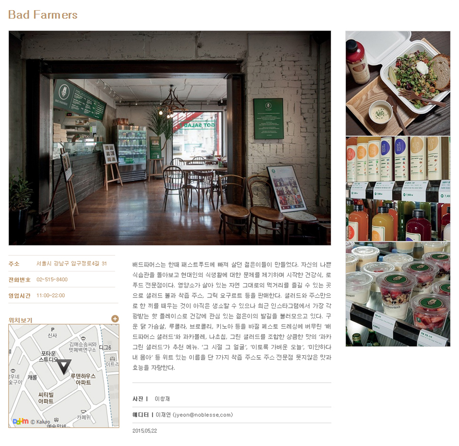